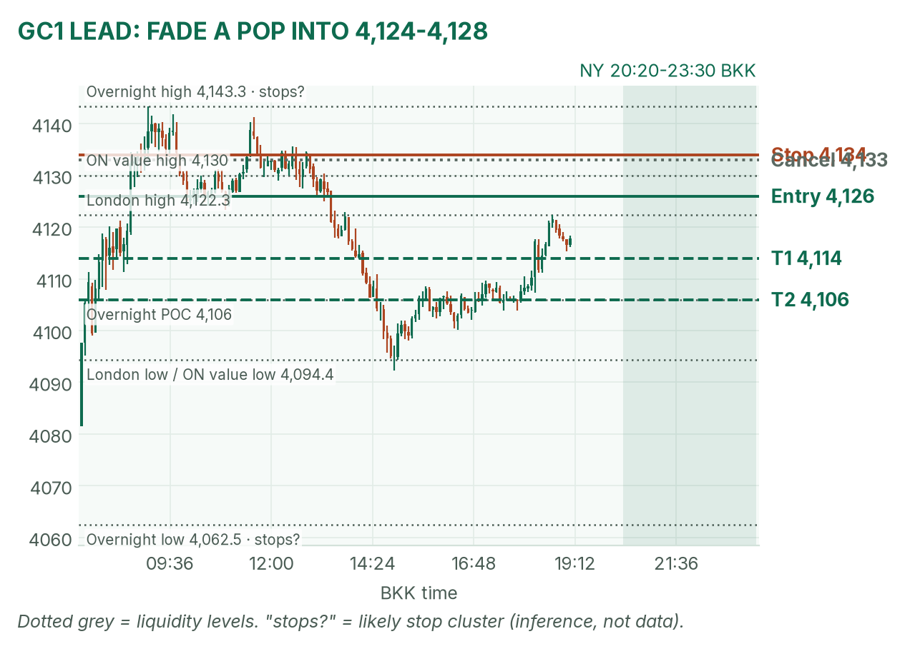
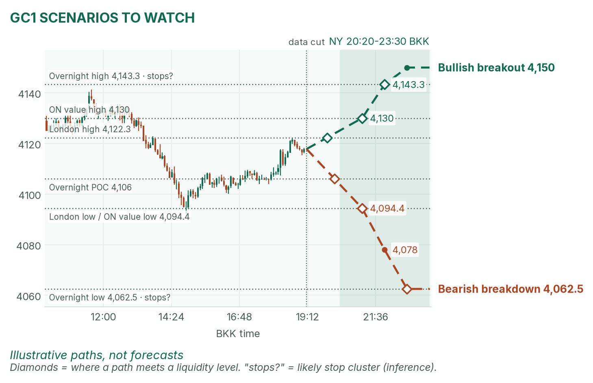
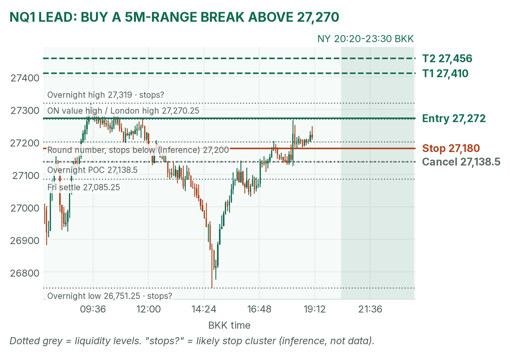
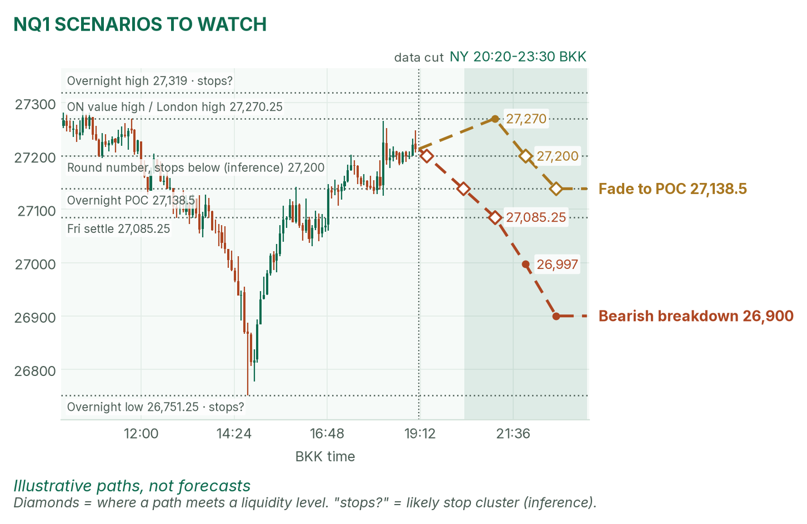

Gold drifts above its busiest price. Nasdaq waits on Nvidia.
Window 20:20–23:30 BKK (US winter time). Data cut 19:10 BKK: GC 4,117.8, NQ 27,213.0 (TopstepX Dec contracts, completed 5-minute bars). Levels only, flat by 23:30. Ideas, not advice. April's pre-NY brief (~18:50 BKK) was read.
Summary
GC: sell a failed pop into 4,124–4,128, stop 4,134, targets 4,114 and 4,106. About 38% once filled.
NQ: buy a break above 27,272, stop 27,180, targets 27,410 and 27,456. About 33%.
Fed speakers at 20:40 and 22:00 and a survey at 23:00 all sit inside the window. No entries 20:35–20:42, 21:55–22:02 or 22:55–23:02.
The market story
The dollar is softer (DXY 101.834, −0.45%) and oil fell again (WTI 88.37, −2.71%), per April. Cheaper oil eases inflation worry; a weaker dollar helps gold. Gold peaked at 4,143.3 at 09:06 and has spent the day rotating around 4,106, the overnight POC (point of control, the price where the most volume traded).
Nasdaq futures made a new low at 26,751.25 at 14:47 on the Nvidia probe headlines then rallied about 460 points as other big tech was bid. December hike odds sit near 80% and CPI lands Tuesday at 20:30. Pre-CPI, with three Fed headlines in the window, I expect ranges with jolts, not a clean trend.
News (BKK)
Time
Event
Forecast
Prior
Read
20:40
Fed's Bowman speaks
–
–
Hawkish on hikes: dollar up, gold and NQ dip. Soft: the reverse.
No survey consensus found. No-trade zones: 20:35–20:42, 21:55–22:02, 22:55–23:02. Sources: April's brief, Helious, MQL5, NY Fed, Investing.com.
Levels to watch
Level
GC
NQ
Overnight high (since 06:00)
4,143.3
27,319.00
Overnight value high
4,130.0
27,270.25
London high
4,122.3
27,265.50
Overnight POC
4,106.0
27,138.50
Overnight value low
4,095.0
26,997.00
Overnight low
4,062.5
26,751.25
Expected NY range (14-session median)
about 46 points
about 321 points
Gold (GC1)
Bias: neutral to mildly bullish. Gold keeps returning to 4,106. The NY rule: mark the range from the 20:20 COMEX open until the first 2-minute candle whose volume falls below half the average of the first two, then fade its edges back to the POC. Price is above the POC, so the fade is a sell.
The trade: mean-reversion sell
Entry
4,124–4,128 (plan 4,126), after 20:42, on a push above the COMEX range high that closes back inside. The zone sits just above the 4,122.3 London high.
~38%, an estimate. Basis: GC NY ranges mostly failed in my 42-session study (not statistically significant); the stop is about 2 five-minute ATRs (average true range, the typical bar size, 3.75 points).
Why: London rejected 4,122, and sellers defended the value high overnight. If the COMEX range forms below 4,110, the sell edge is gone: no trade. April partly agrees: gold above 4,100 suits a fade to 4,106, but she calls no sell.

GC 5-minute bars into 19:10. Entry between the London high and value high.

Illustrative paths, not forecasts.
Scenarios to watch
Bullish breakout: a 15m close above 4,130 that holds after Bowman. Aims for 4,143.3, the overnight high.
Bearish breakdown: a 15m close below 4,094.4, the London low. Aims for 4,078, then 4,062.5.
Nasdaq (NQ1)
Bias: mildly bullish. NQ recovered from 26,751.25 to above Friday's 27,085.25 settle, and ES is up 0.62%. The NY rule: trade breakouts of the 21:30–21:35 range. VWAP (the volume-weighted average price) only counts as a filter after about 22:00: stay long only above it.
The trade: bullish range breakout
Entry
Buy stop 27,272, above the 27,270.25 value high. If the 21:30–21:35 range high is higher, use one tick above it and keep the 92-point stop distance.
5m close below 27,138.5 before entry, or no break by 22:30
Probability
~33%, an estimate. Basis: NQ 5-minute range breakouts averaged +0.37R over 31 sessions (not statistically significant), but the overnight high sits in the path.
Why: the trend since 14:47 is up, and the stop sits under likely stops at 27,200 (my inference). 27,319 is the first wall; a stall there back under 27,270 is a loser. April agrees on a calm-open retest of 27,319, with Nvidia the risk.

NQ 5-minute bars into 19:10. The break must clear the overnight high.

Illustrative paths, not forecasts.
Scenarios to watch
Bearish breakdown: Nvidia slides and NQ closes 5m below 27,085.25. Aims for 26,997, then 26,900.
Mean reversion: a pop to 27,270 that fails. Aims for 27,200, then the 27,138.5 POC.
6E (not traded): 1.1203, near its 1.1214 high on the softer dollar.
Before you click
ORB bases. GC NY: 20:20 COMEX open until a 2-minute candle's volume drops below half the first two's average, fade to POC. NQ NY: 21:30–21:35 range, trade breakouts. GC and 6E London: 15:00–15:30 range (fade gold, break the euro).
Checklist. 1) Room to today's max loss? 2) Within daily rules? 3) No release within 30 minutes? 4) Agrees with the bias? 5) At a marked level? 6) Setup tagged? 7) Entry, stop, 1R partial, target set? 8) Calm, not chasing?
Reset (60 seconds). Hands off the mouse. Breathe in 4, hold 4, out 6, five times. Name the feeling in one word. Say the plan aloud. "Eager" or "frustrated"? Wait 5 minutes.
TopstepX Dec bars, read-only. Profiles from 5-minute bars; overnight starts 06:00 BKK. DXY, oil, ES, Fed odds and Nvidia news: April's brief.